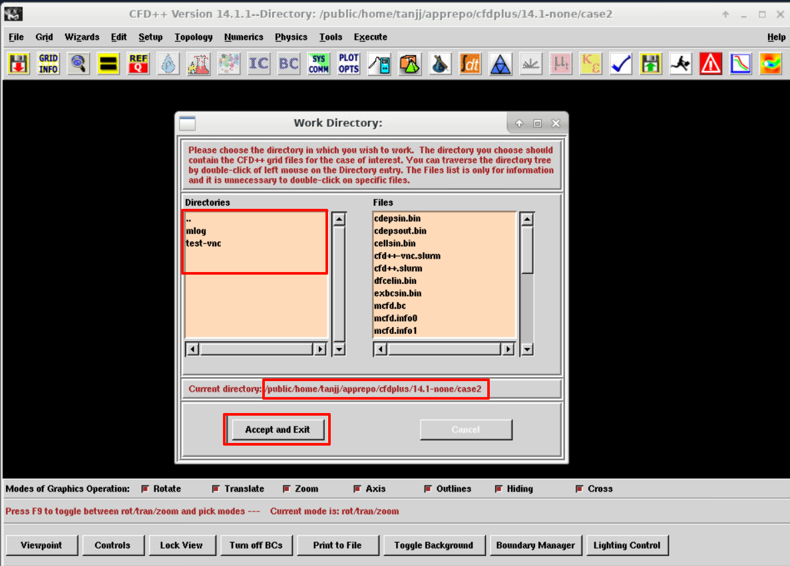
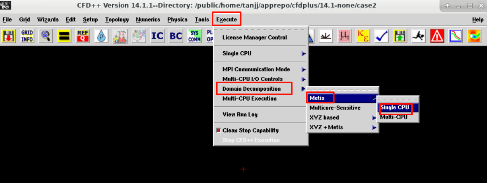
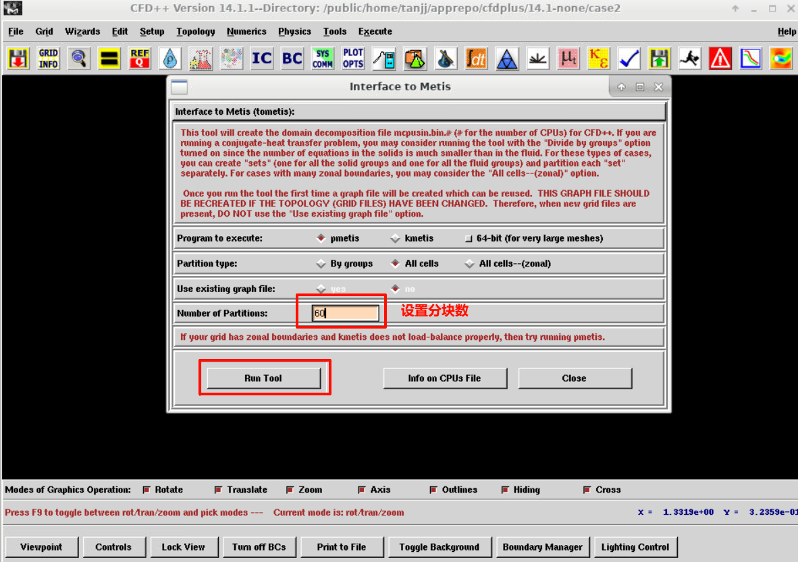
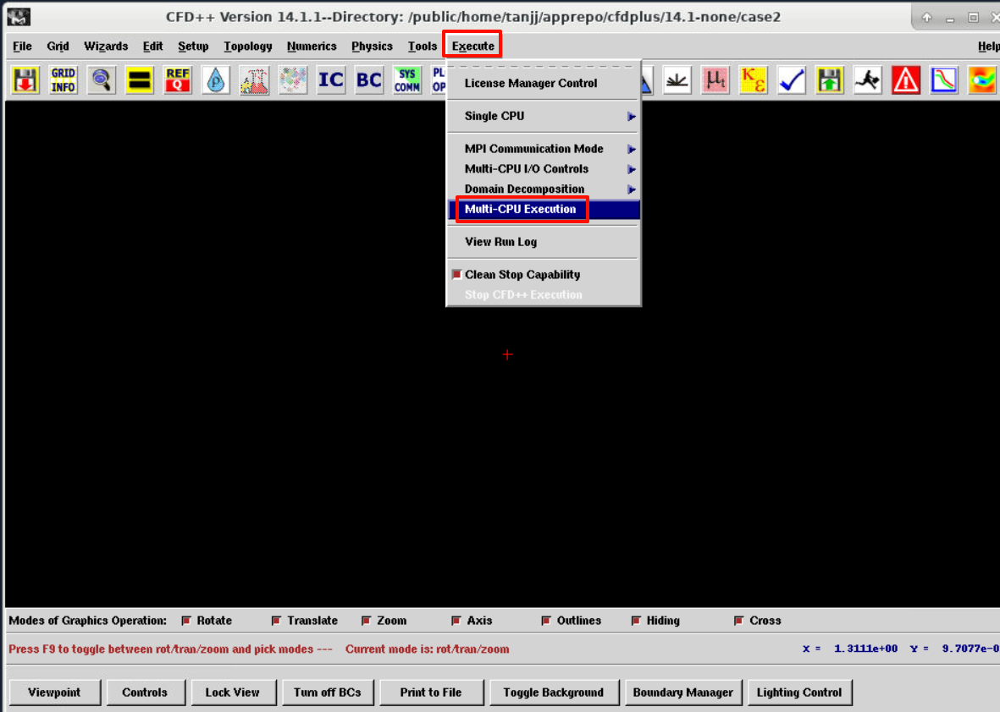
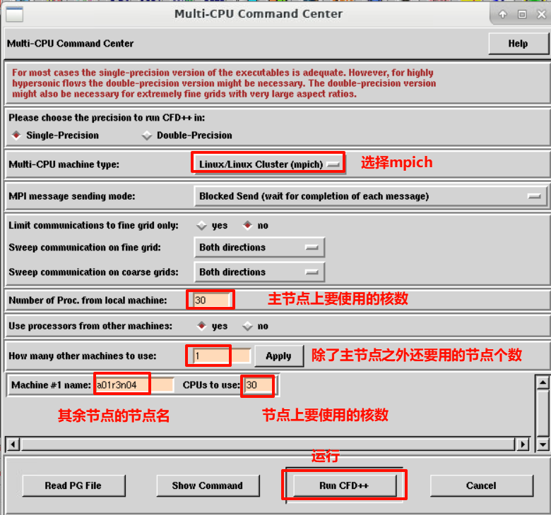

图形
启动脚本示例
#!/bin/bash
#SBATCH -J cfd++ #指定作业名称
#SBATCH -p kshcnormal #指定队列/分区名称
#SBATCH -N 2 #指定节点数
#SBATCH --ntasks-per-node=32 #指定每节点的任务数量
# 环境加载
module purge
module load compiler/devtoolset/7.3.1 mpi/mpich/3.3.2-gcc-7.3.1
source /public/home/tanjj/apprepo/cfdplus/14.1-none/scripts/env.sh
export MPI_REMSH=rsh
ulimit -s unlimited
ulimit -l unlimited
# 图形投射
export DISPLAY=vncserver04:18
# 图形程序启动
/public/home/tanjj/apprepo/cfdplus/14.1-none/app/mlib/mcfd.14.1/exec/mcfdgui
sleep 10000
Tip
- 图形脚本计算
linux版本只能走mpich并行 - 创建一个
rsh软连接，ln -s /usr/bin/ssh /pathto/xxx/rsh，然后将export PATH=/pathto/xxx:$PATH写入到~/.bashrc cfd++的启动环境也需要写到~/.bashrc
图形计算设置
算例设置
导入算例文件
点击左侧的Directory窗口，切换至算例所在目录，点击Accept and Exit载入算例

Tip
可以选择不display the Grid Boundaries
网格划分
点击Execute --> Domain Decomposition --> Metis --> Single CPU

设置网格分块数与并行进程一致，点击Run Tool,会弹出运行日志框

网格分块成功后，算例目录下会输出mcpusin.bin.分块数文件，没输出就是失败了，原因结合日志分析
Tip
- 网格划分建议走单核
- 划分失败若是因内存问题，可以调大启动软件环境里的
MCFD_PROCMEM和MCFD_MAXMEM的内存配置
并行设置
界面参数设置
点击`Execute --> Multi-CPU Execution

设置并行参数，点击Run CFD++，开始计算，会弹出运行日志框，运行识别结合日志分析

Tip
Multi-CPU machine type选择为Linux/Linux Cluster(mpich)- 默认是用主节点的的核数并行，跨节点则需要另外添加其余的节点名和并行核数
- 若因内存问题，可以调大启动软件环境里的
MCFD_PROCMEM和MCFD_MAXMEM的内存配置
启动环境内存解释
-
MCFD_MAXMEM单个运行实例可使用的最大总内存上限 限制整个计算任务的内存使用总量，防止系统过载 -
MCFD_PROCMEM每个MPI进程的最大内存分配限额 在并行计算中控制单个进程的内存使用 -
MCFD_SPROCMEM和 MCFD_PROCMEM 一样，优先级更高 -
MCFD_PPROCMEM每个MPI进程的物理内存分配限制
详细见手册
Tip
自带手册打开方式:
export DISPLAY=vncserver02:14
cd /pathto/cfdplus/14.1-none/app/mlib/mcfd.14.1/html/
firefox index3.html